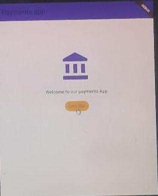
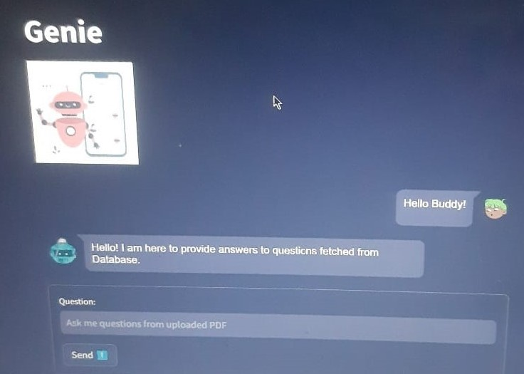

Upcoming projects:
Learning Personalization using ML(Reserach-based), Mobile Application for StartUp
1.Unity based game(CityWarz:Mission Freedom)
With a thrilling adventure happening in Mumbai City, you are surrounded by Chad, Old Lady, parents and the Lava Monster! Will you be able to achieve the victory of duel battles followed by the finale of defeating the monster?(Produced music too! Use headphones)
2.Flutter based HPCL Registration Mobile Application
Working app to signup and login with credentials to access main menu.
GitHub Repo3.Hostel Management
Techfest IIT Bombay’s project to generate csv file of arranging raw registered data of students to allot them to their respective rooms.
GitHub Repo4.Voice to Sign Language converter
Helping deaf and mute people understand what a normal person is trying to communicate.
5.Deep Learning based Crop Disease Detection Website
Aims to serve farmers, focusing especially on those who aren't well versed in technology. It deals with detecting and predicting plant diseases.
6.Women Security Mobile/Web Application
Women can now send emergency messages and live location to registered numbers.
GitHub Repo7.Three JS based Solar System Website
Motion graphics.
GitHub Repo8.Flutter based Payments Mobile App
Add and Deduct your money
9.Chat Bot
10.AWS based To do list
11.Python based Text Encryption
Encrypt and Decrypt the text.
GitHub Repo12.Password generator Website
Generates your customized password based on selecting unique characters.
GitHub Repo13.Python based Brute Force Password Cracker
Finds the hidden passwords along with counting the number of times the password got cracked.
14.Security Quiz Website
Test your knowledge on cyber security and learn from the mistakes.
GitHub Repo15.Python based Hospital Management System
Aided in providing available appointments and reports of patients with the help of user input.
16.Approvify Event Management Website
Students can access this website to register for any events in all coclleges that is happening all over India.
17.IoT based Blynk Application
Monitoring Arduino board via Software application.
18.Python-SQL based Invoice Generator
Generating bills after user inputs the purchased items from a supermarket.
19.Java based Trivia GUI Application
Question and Answer game
20.Orange based Data mining
Gathering data and clustering it accurately.